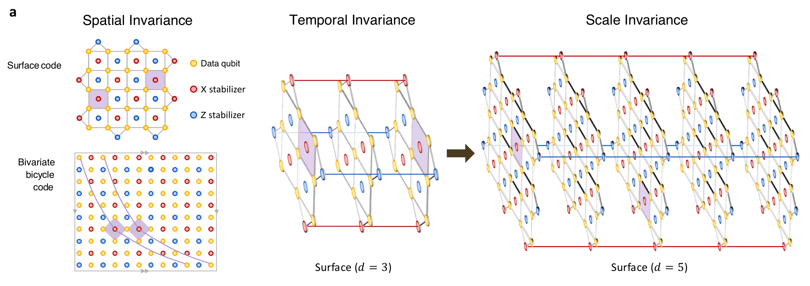
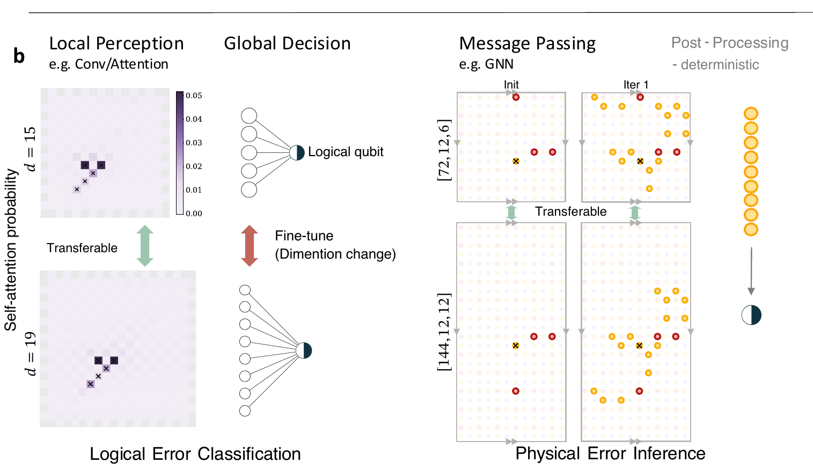
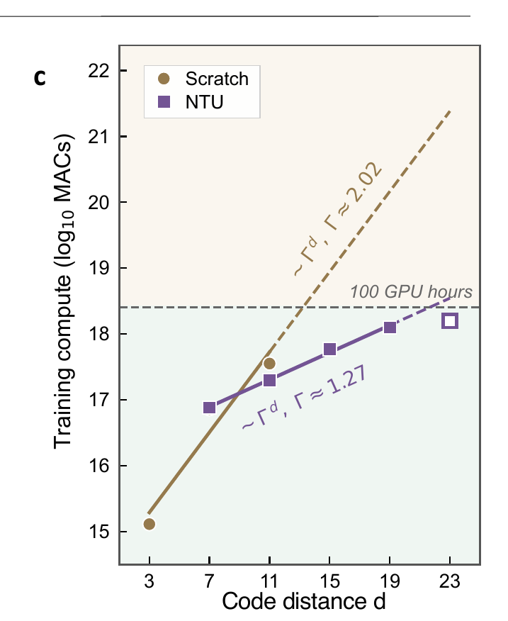

Data qubits
Physical qubits carrying the encoded state and producing noisy syndrome evidence.
Neural Transfer Unification for quantum error correction
NTU maps the spatial, temporal, and scale-invariant structure of quantum error-correcting codes into neural decoder design, so local error knowledge learned on smaller codes can transfer to larger fault-tolerant regimes.
Introduction to neural decoding
A quantum error-correcting code stores k logical qubits in
n noisy data qubits. The code distance d
measures how many physical faults are needed to create an undetected
logical error. A decoder receives detector events from repeated
syndrome measurements and must infer either physical corrections or
logical status.
Physical qubits carrying the encoded state and producing noisy syndrome evidence.
Protected degrees of freedom. Surface-code memory uses k = 1; BB examples use k = 12.
The scaling parameter that expands the syndrome volume and raises the decoding difficulty.
The rotated surface code has a visible planar stabilizer pattern, while bivariate bicycle codes use compact cyclic polynomial neighborhoods in a quantum LDPC Tanner graph. Both families preserve reusable local motifs as the code grows.
A model can predict physical errors on data qubits and then correct them, or directly predict the logical error vector. NTU uses both views: graph-based neural-BP for physical-error inference and NTU-Transformer for logical-error prediction.

Figure 1a
Spatial shifts, repeated syndrome rounds, and larger code
distances preserve the same local detector motif:
N(v) = v M(x,y,t).

Figure 1b
Local perception is transferable across distances, while global decisions need target-size adaptation. For Tanner-graph decoding, message passing preserves the physical-error inference structure.

Figure 1c
Training from scratch scales steeply with distance. NTU reduces the scaling pressure by reusing local representations and fine-tuning the target-specific readout.
Main results
The project page focuses on panels a and c of the main result figures: decoding performance and transfer behavior.
Surface code
Figure 2a compares logical error rate across physical error rates, showing that the neural decoder remains competitive where matching baselines are strained by correlated, degenerate detector events. Figure 2c isolates the training effect: transfer initialization avoids the cold-start plateau seen when large-distance models are trained from scratch.

Bivariate bicycle code
Figure 3a shows strong NTU-Transformer performance on the base BB
code against belief-propagation-based baselines. Figure 3c shows the
larger [[144,12,12]] target case, where transferred
models rapidly improve while scratch training can stagnate near
random guessing.

Methods
NTU-Transformer directly predicts logical errors, while GNN-based neural-BP predicts physical errors on the Tanner graph.
Input {0,1}^{T x m} detector history; output
[0,1]^k logical-error probabilities.
Embed detector events with local code geometry and neighborhood roles.
Mix detector features within each syndrome round while preserving local motifs.
Track how detector events persist or move along repeated syndrome rounds.
Aggregate spatiotemporal features into k logical status predictions.
The Transformer route treats decoding as direct logical classification. It separates reusable local detector perception from target-size-specific global readout, making transferred weights meaningful when the code distance grows.
Reference
@misc{yan2026efficientfoundationdecoders,
title = {Efficient foundation decoders for fault-tolerant quantum computing},
author = {Yan, Ge and Li, Shanchuan and Xiao, Shiyi and Ma, Pengyue and Cao, Hanyan and Pan, Feng and Du, Yuxuan},
year = {2026}
}